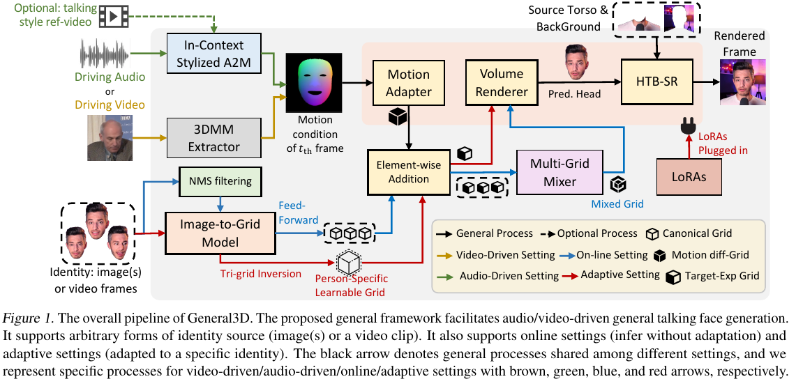

Talking face generation (TFG) aims to animate a target identity's face to create realistic talking videos using an image, multiple images, or a video clip as the identity source. However, finding a generic and scalable way to represent the human head for the different identity sources has been challenging. As a result, the TFG community has independently developed specialized methodologies for each setting. We argue that an ideal TFG system should handle all types of identity sources and harness each methodology's strengths. In this study, we propose General3D, the first attempt to unify TFG into a general framework. Our approach consists of three main components: (1) a coarse-to-fine generic (CTFG) talking face model that supports any identity source without requiring adaptation, (2) a static-dynamic-hybrid (SD-Hybrid) pipeline that enables fast and sample efficient adaptation of our CTFG model to achieve higher identity similarity on unseen identities (47 times faster than baselines), and (3) an in-context stylized audio-to-motion (ICS-A2M) model that enables generating co-speech facial motion with a personalized talking style. Extensive experiments demonstrate that General3D surpasses existing baselines and produces realistic talking-face videos across all TFG settings.
The overall inference process of General3D is demonstrated as follows:

In this video, we first give a brief system overview, then we provide three demos to demonstrate the effectiveness of the (1) coarse-to-fine generic (CTFG) talking face model, (2) static-dynamic hybrid (SD-Hybrid) adaptation pipeline, and (3) in-context stylized audio-to-motion (ICS-A2M) model.